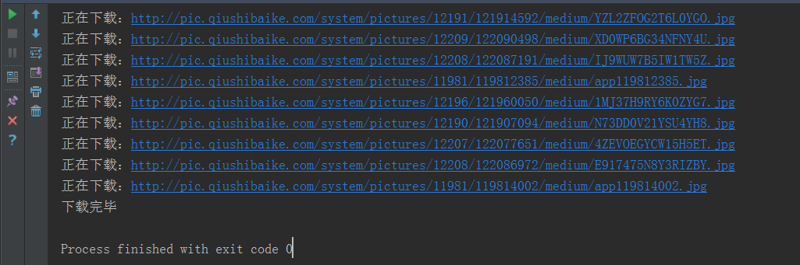

话不多说，直接上代码；
# 需要的库
import requests
import re
import os
from multiprocessing import Pool
# 请求头
headers = {
'User-Agent': 'Mozilla/5.0 (Windows NT 6.1; WOW64) AppleWebKit/537.36 (KHTML, like Gecko) Chrome/65.0.3325.181 Safari/537.36'
}
# 主函数
def get_img(url):
# 定义图片存储路径
img_path = './img/'
if not os.path.exists(img_path):
os.mkdir(img_path)
try:
# 请求网页
response = requests.get(url=url,headers=headers)
# 正则提取图片地址
response = re.findall('<div class="thumb".*?<img src="(.*?)".*?</a>',response.text,re.S)
# 循环图片地址
for i in response:
# 拼接完整图片路由
url = ('http:' + i)
# 请求完整图片路由
response = requests.get(url,headers)
# 图片命名
img_name = url.split('/')[-1]
# 判断图片是否已下载
if os.path.exists(img_path+img_name):
print('图片已存在')
else:
# 下载图片
with open(img_path+img_name,'wb') as f:
f.write(response.content)
print('正在下载：'+url)
except Exception as e:
print(e)
# 程序主入口
if __name__ == '__main__':
# 构造所有ip地址
urls = ['https://www.qiushibaike.com/imgrank/page/{}/'.format(i) for i in range(1,14)]
# 使用多进程
pool = Pool()
# 开启多进程爬取
pool.map(get_img,urls)
print('下载完毕')下载中;

打开文件夹查看图片；
done